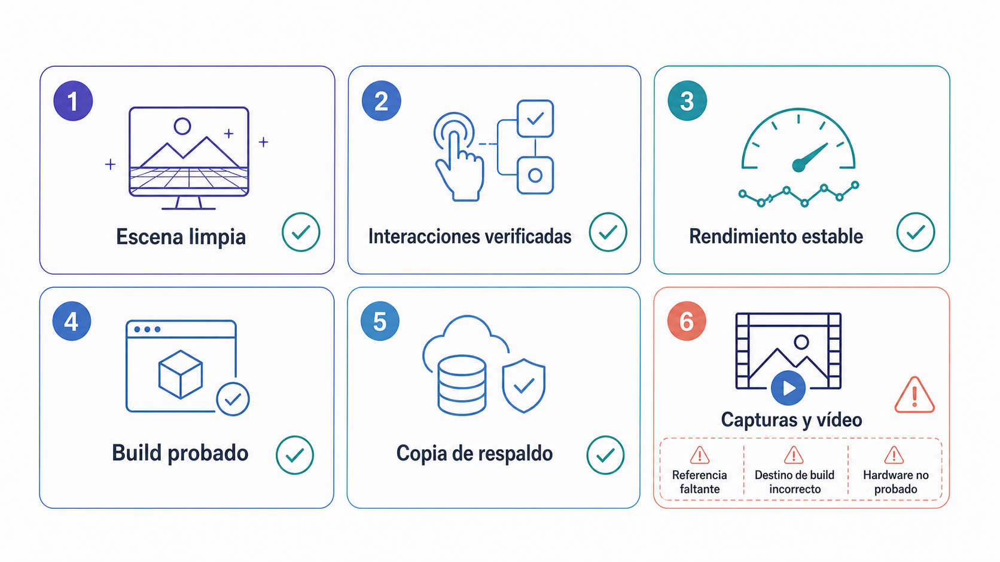
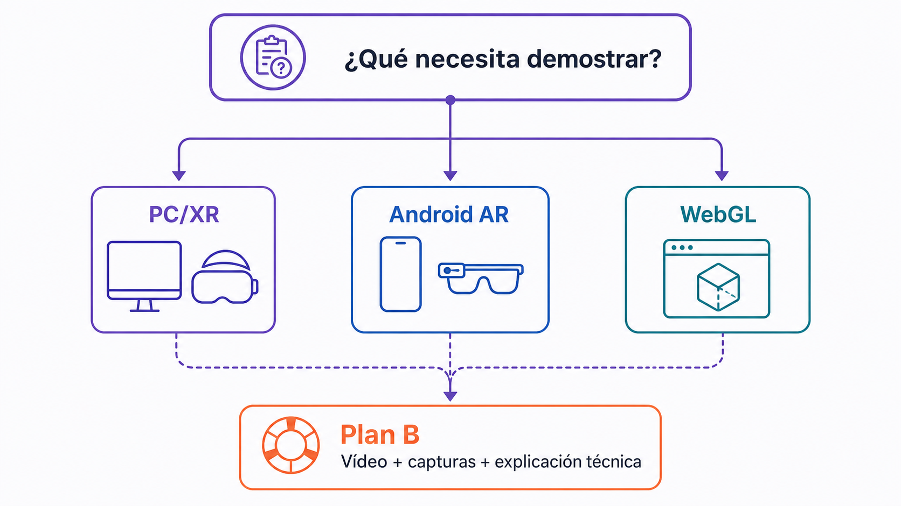
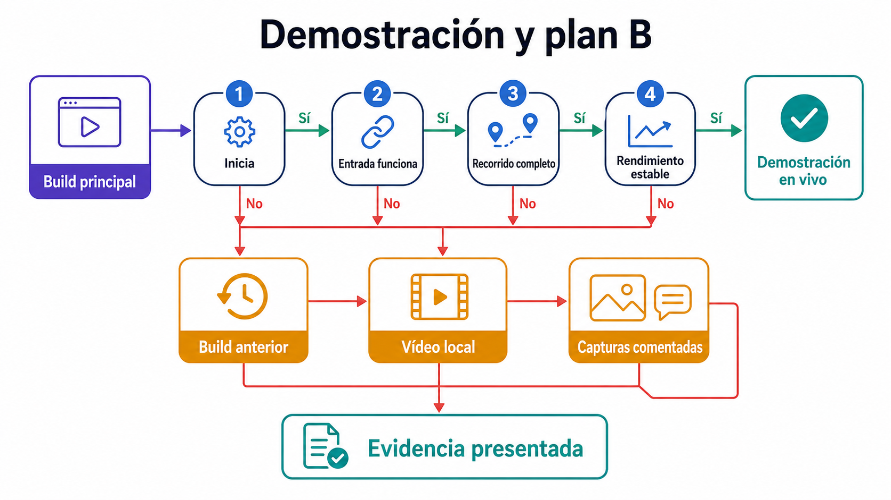

Presentación práctica del proyecto final y WebGL/Build
Preparar y presentar el prototipo final en clase, con un build estable y, cuando sea viable, una versión WebGL.
Objetivos de aprendizaje
Verificar un build estable antes de la presentación.
Seleccionar la plataforma de demostración adecuada y preparar un plan B.
Presentar el prototipo dentro del tiempo asignado.
Responder preguntas conectando decisiones y evidencias.
Entregar pruebas reproducibles del funcionamiento.
Comprobación previa
La comprobación se realiza sobre el mismo equipo y hardware que se usarán en la presentación. Un proyecto que solo funciona dentro del editor todavía no se considera un build validado.

Figura 4.3 — Lista visual de preparación antes de presentar el build.
Criterios de aceptación
Decisión de plataforma
PC/XR es la vía principal cuando se necesita demostrar interacción corporal o seguimiento. Android AR se utiliza para experiencias ancladas al espacio físico. WebGL es apropiado para una versión adaptada que no dependa de funciones XR no disponibles en el navegador. El vídeo con capturas y explicación técnica es el plan de continuidad, no un sustituto de las pruebas previas.

Figura 4.4 — Decisión de plataforma y estrategia de respaldo.
Procedimiento
1
Ejecutar la lista de comprobación previa y registrar cualquier incidencia.
Guía detallada y comprobación
2
Generar o recuperar el último build estable.
Guía detallada y comprobación
3
Probar el recorrido de demostración con cronómetro.
Guía detallada y comprobación
4
Preparar el plan B en una ubicación accesible sin conexión.
Guía detallada y comprobación
Grabar un vídeo corto de la experiencia
Completar el plan B
5
Presentar durante ocho minutos: intención, recorrido, decisiones, evidencia y limitaciones.
Guía detallada y comprobación
6
Recoger respuesta y registrar una acción de mejora prioritaria.
Guía detallada y comprobación

Figura 4.6 — Escalera de respaldo cuando falla la demostración principal.
Evidencias de cierre
Finalización de la sesión
Confirma cuando hayas completado la actividad central
La visita a la página se registra como progreso de lectura. Esta confirmación registra la sesión como completada.